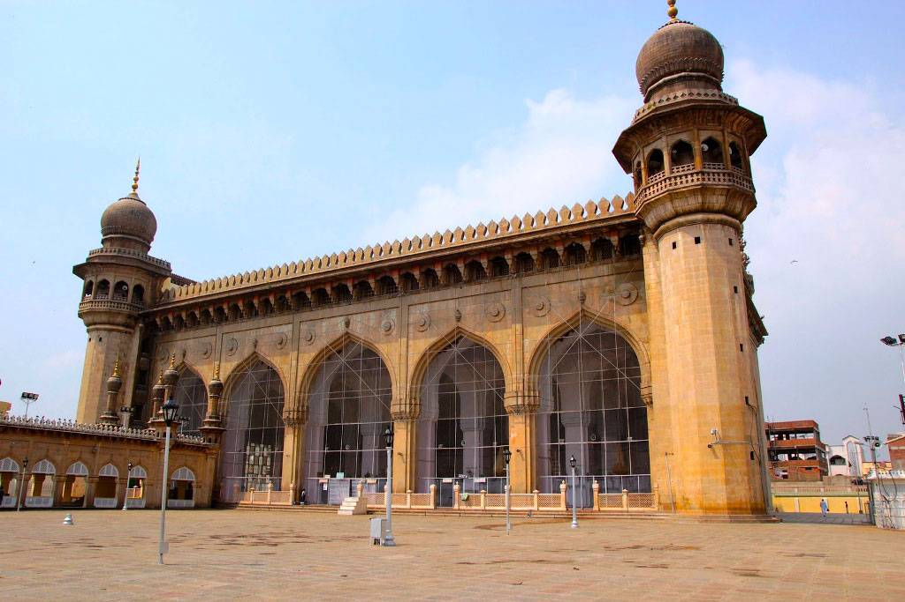
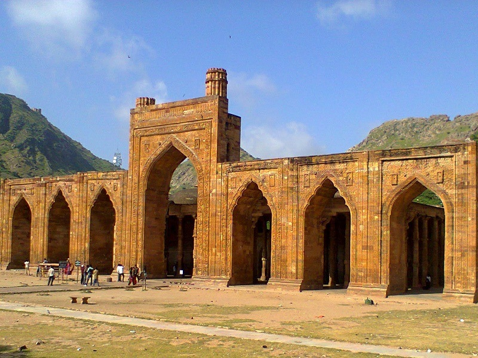
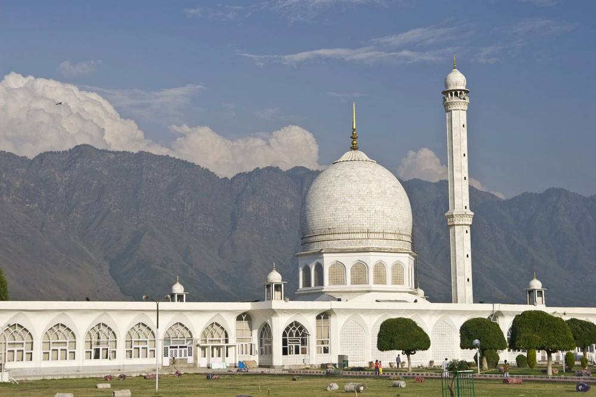

1. Jama Masjid, Delhi
The largest mosque in India capable to accommodate around 25,000 devotees during prayer, Delhi Jama Masjid ranks among the worlds’ most
popular Muslim religious sites. An inseparable part of Delhi tourism, this architectural extravaganza was constructed by Mughal emperor
Shah Jahan in 1644. Brought out with impressive detailing over the minarets, domes, arches and doors, this highly decorative masjid
comprises four grand towers, three huge gates. The minarets are 40m high and made of red sandstone and white marbles. The mosque is about
261 feet (80 m) long and 90 feet (27 m) wide. To make resemblance with the Jama Masjid of Agra, the floor of this mosque had been covered
with white and black ornamented marbles (making it look like a Muslim prayer mat). The inlay detailing in the interior arches looks
impressive till date. The northern gate of Delhi Jama Masjid has 39 steps and the southern side has 33 steps. The eastern gate to this
mosque was made for the rural entrance and it has 35 steps.

2. Makkah Masjid, Hyderabad
An easy to view architectural genius from the top of the Charminar in Hyderabad, Makkah Masjid or Mecca Masjid is located close to the
historic landmarks of Chowmahalla Palace, Laad Bazaar. One of the oldest mosques in India, this Muslim religious site was constructed
by Muhammad Quli Qutb Shah, the fifth ruler of the Qutb Shahi dynasty. It is believed that the bricks used for constructing central
arch of the mosque were soil-made and were brought all the way from the hallowed city of Mecca in Saudi Arabia. The main prayer hall
of this mosque rises around 75 feet above the ground and can accommodate around 10,000 people at a time. The mosque has got five
passageways, arched galleries and octagonal balconies, four minarets attached with a small dome above each. The mosque is designed
with floral motifs and frescoes and many of the arches are inscribed with Quranic verses. The main prayer hall is 75 feet high, 220
feet wide and 180 feet long. It is estimated that the mosque it took 77 years and around 8000 workers to complete the construction
of this imposing Masjid.

3. Adhai Din ka Jhonpra Mosque, Ajmer
Located on the border of Ajmer, Rajasthan- Adhai Din ka Jhonpra Mosque is a popular mosque beyond the Dargah of Khwaja Muin-ud-din Chishti
Rahmatullah Alaih. These extraordinary ruins were believed to have been given today’s form with an extended wall raised within two and a half
days by Muhammad Ghori. Originially built as a Sanskrit college for the advancement of the language, this complex was vandalised by Ghori
and in 1198 he converted the building to a mosque with the extension of a seven-arched wall. This extended part was embellished with Islamic
calligraphy in front of the pillared hall. On the front wall of the entrance one can see arches made of yellow limestone. The intriguing
rectangular panels carved on the walls of the prayer hall resemble the design of Persian mosques.

4. Hazratbal Masjid, Jammu & Kashmir
Located in Hazratbal, Srinagar in Jammu and Kashmir, Hazratbal Masjid is a hallowed Islamic shrine on the left bank of the Dal Lake. Being
154m in length and 25m in height, this pristine white structure comprises one dome and one minaret. The shrine contains a holy relic called
the Moi-e-Muqaddas which is believed by many Muslims as the hair strand of Prophet Muhammad Sallallahu Alaihi Wasallam. Found at a scenic
location, this quaint religious building looks impressive on clear sky days and startles the eyes of the visitors when its reflection appears
on the Dal Lake.